Evaluating the Confidence-Interval Performance of the Double LASSO Estimator in High-Dimensional Linear Models
Abstract
High-dimensional control settings have become standard in empirical economics, yet reliable inference on low-dimensional parameters remains challenging when model selection is required. This paper evaluates the finite sample confidence interval performance of the Double LASSO estimator in high-dimensional linear models. Using a comprehensive Monte Carlo design, we study coverage probability and interval length across a range of data-generating processes that vary in dimensionality, covariate correlation, signal strength, and tail behavior. The results show that Double LASSO delivers confidence intervals with coverage close to the nominal level in many empirically relevant settings, particularly when theoretically calibrated (plug-in) penalties are used. Performance improves in designs with intermediate covariate correlation and in heavy-tailed environments; in the latter case, the higher empirical coverage is primarily accompanied by longer confidence intervals, consistent with more conservative inference rather than systematically improved estimator accuracy. In contrast, classical ordinary least squares performs poorly once dimensionality approaches the sample size, producing either unreliable or uninformatively wide intervals. At the same time, we identify finite sample limitations of Double LASSO in designs with weak signals and low correlation, highlighting the ongoing importance of careful tuning and design awareness. Overall, the findings indicate that Double LASSO is a practical and robust tool for inference in modern high-dimensional applications, while also motivating further work on procedures that explicitly account for model uncertainty, hidden confounding, and dependence structures
1 Introduction
High-dimensional linear models have become a standard empirical framework in modern econometrics, driven by the availability of rich datasets with a large number of potential control variables relative to the sample size. While these settings offer substantial flexibility, they also introduce fundamental challenges for estimation and inference. In particular, conventional methods such as ordinary least squares break down when the number of covariates approaches or exceeds the sample size, and naive post-selection inference after variable selection is well known to produce distorted confidence intervals and misleading uncertainty statements (Leeb & Pötscher, 2005; Belloni, Chernozhukov, & Hansen, 2014).
The Double LASSO estimator was developed precisely to address this tension between flexible model selection and valid statistical inference. By combining \(\ell_1\)-penalized regression with a carefully constructed orthogonalization step, Double LASSO allows researchers to estimate low-dimensional target parameters — such as treatment effects while controlling for a potentially very large set of nuisance covariates. The key insight is that the inference can remain valid even after variable selection, provided the estimating equations satisfy a Neyman orthogonality condition that renders the target parameter locally insensitive to small selection mistakes (Belloni et al., 2014; Chernozhukov et al., 2018).
Although the asymptotic theory of Double LASSO is now well established, its finite sample performance especially the behavior of confidence intervals remains an important empirical question. This issue is particularly relevent in applications with moderate sample sizes, strong correlations among covariates, or non-Gaussian data features that are common in practice. In such environments, the nominal coverage of confidence intervals and their lengths can deviate substantially from theoretical benchmarks, raising concerns about the reliability of applied inference (Chernozhukov, Chetverikov, & Kato, 2017).
This paper provides a systematic Monte Carlo evaluation of the confidence-interval performance of the Double LASSO estimator in high-dimensional linear models. We focus on coverage probabilities and confidence-interval lengths across a range of data generating processes, including approximately sparse Gaussian designs and heavy-tailed settings that challenge standard regularity conditions. To place the results in context, we compare Double LASSO with conventional OLS based inference whenever OLS is feasible, highlighting the trade-offs between robustness, efficiency, and inferential validity.
2 Literature Review
In many modern econometric applications, researchers work in settings where the number of potential control variables is large relative to the sample size. In such cases, standard regression methods become unreliable. Overfitting and multicollinearity lead to unstable estimates and invalidate classical inference. Regularization methods such as the Least Absolute Shrinkage and Selection Operator (LASSO) address these issues by shrinking coefficients toward zero and selecting variables in a data-driven way. While LASSO often performs well for prediction, it is poorly suited for inference. The shrinkage it imposes biases coefficient estimates, rendering standard confidence intervals and hypothesis tests invalid. As a result, inferential questions—such as estimating treatment effects—cannot be addressed directly using naive LASSO procedures.
To overcome this limitation, a growing literature develops methods that combine variable selection with valid inference. A central contribution is the double selection, or post-double-selection, approach commonly referred to as Double LASSO. Alongside this method, alternative strategies such as de-biased or de-sparsified LASSO aim to correct regularization bias and restore asymptotic normality. Despite strong theoretical guarantees, an important practical question remains: how reliable are the resulting confidence intervals in finite samples and realistic data environments?
The foundational paper by Belloni, Chernozhukov, and Hansen (2014), Inference on Treatment Effects After Selection Amongst High-Dimensional Controls, formalizes the Double LASSO approach in a partially linear model with a treatment variable, an outcome, and a high-dimensional set of controls. The key identifying assumption is approximate sparsity: although many covariates are observed, only a small and unknown subset is truly relevant for confounding adjustment. The method selects controls separately in the treatment and outcome equations and estimates the treatment effect using their union. Under suitable conditions, this procedure yields uniformly valid inference and has become a standard tool for causal analysis in high-dimensional settings.
A related line of research focuses on correcting LASSO bias directly. De-biased or de-sparsified LASSO modifies the original estimator to remove shrinkage bias, producing approximately normal estimators that support valid inference. These ideas extend beyond simple linear models. For example, Zhu, Yu, and Cheng (2019) develop de-biased LASSO methods for partially linear models, allowing inference on components of a high-dimensional parameter vector without imposing strong signal conditions. Compared to Double LASSO, these approaches permit broader inference but typically rely on stronger regularity assumptions.
Despite these advances, an important limitation remains. Both Double LASSO and de-biased LASSO condition on a selected model and treat it as fixed. In high-dimensional settings, however, variable selection is inherently unstable. Small changes in the data can alter the selected set of controls, yet this uncertainty is not reflected in conventional confidence intervals. As a result, inference may appear precise even when the underlying selection step is fragile.
Another major challenge arises from hidden confounding. In observational data, unobserved factors may influence both covariates and outcomes. When such confounders are present, even bias-corrected estimators can produce misleading confidence intervals. Guo, Ćevid, and Bühlmann (2020) address this issue by proposing the Doubly Debiased LASSO, which combines spectral transformations with bias correction to mitigate the effects of unobserved confounding. Under a dense confounding structure, they show that their estimator is asymptotically normal and supports valid inference.
Overall, the literature highlights that the performance of LASSO-based inference depends sensitively on data characteristics and tuning choices. In Double LASSO, finite-sample performance may deteriorate when relevant covariates have small effects, when regressors are highly correlated, or when regularization parameters are poorly chosen. De-biased LASSO faces similar challenges in unfavorable designs or small samples. While asymptotic theory provides strong guarantees, practical reliability remains an empirical question. This motivates systematic Monte Carlo evaluations that assess coverage accuracy, interval length, and stability across controlled data-generating processes.
3 Model and Monte Carlo Simulations
3.1 The High-Dimensional Linear Model
We consider a high-dimensional linear regression framework in which the number of available covariates may be large relative to the sample size. Let \(Y_i\) denote the outcome of interest, \(D_i\) a scalar regressor whose effect is the primary object of inference, and \(X_i \in \mathbb{R}^p\) a potentially high-dimensional vector of control variables. The data are assumed to satisfy the linear model \[ Y_i = \alpha_0 D_i + X_i^\top \beta_0 + \varepsilon_i, \quad i = 1, \ldots, n. \] Here \(\alpha_0\) is the low-dimensional target parameter, \(\beta_0 \in \mathbb{R}^p\) is a high-dimensional nuisance parameter, and \(\varepsilon_i\) is an unobserved error term with zero conditional mean given \((D_i, X_i)\).
A central feature of this setting is that the dimension \(p\) may be comparable to or exceed the sample size \(n\), making ordinary least squares infeasible or unreliable. Identification and inference therefore rely on structural assumptions about the nuisance component \(\beta_0\). Following the modern high-dimensional literature, we adopt an approximate sparsity assumption, which allows \(\beta_0\) to be well approximated by a sparse vector even when it is not exactly sparse. This assumption reflects the empirical belief that, among many potential controls, only a relatively small subset plays a substantively important role in explaining variation in the outcome (Belloni, Chernozhukov, and Hansen, 2014).
The regressor of interest \(D_i\) is permitted to be correlated with the control variables \(X_i\), which rules out simple univariate regression and motivates the use of high-dimensional adjustment. To make this dependence explicit, we also consider the reduced-form representation The regressor of interest \(D_i\) is permitted to be correlated with the control variables \(X_i\), which rules out simple univariate regression and motivates the use of high-dimensional adjustment. To make this dependence explicit, we consider the reduced-form representation \[ D_i = X_i^\top \gamma_0 + v_i, \qquad \mathbb{E}[v_i \mid X_i] = 0. \] The parameter \(\gamma_0 \in \mathbb{R}^p\) is a high-dimensional nuisance component that captures the dependence of the target regressor on the controls. This formulation highlights that valid inference on \(\alpha_0\) requires controlling for the joint dependence of \(Y_i\) and \(D_i\) on a large set of covariates. The parameter \(\gamma_0\) plays no direct substantive role and is introduced solely to construct an orthogonal estimating equation for the parameter of interest.
We allow for heteroskedasticity and do not impose Gaussianity on the error terms. These weak distributional assumptions are adopted to reflect empirically relevant settings in which covariates and disturbances may exhibit heavy-tailed behavior or other deviations from standard regularity conditions. The resulting challenge is to construct an estimator and associated confidence intervals for \(\alpha_0\) that remain valid in high-dimensional settings with potentially non-Gaussian features.
3.2 Target Parameter and the Double LASSO Procedure
The central object of interest in this study is the scalar parameter \(\alpha_0\). It measures the marginal effect of the regressor \(D_i\) on the outcome \(Y_i\), after controlling for a potentially large set of covariates. In many empirical settings, this parameter has a clear causal or policy interpretation. The remaining coefficients play a different role. They absorb confounding variation but are not themselves of substantive interest. This creates a natural distinction between the low-dimensional target parameter and the high-dimensional nuisance components.
Formally, the nuisance parameters are the vectors \(\beta_0\) and \(\gamma_0\) from the outcome and treatment equations. Although these vectors may be high-dimensional and hard to estimate precisely, inference on \(\alpha_0\) does not require classical consistency for each component. What matters is that estimation errors in \(\beta_0\) and \(\gamma_0\) do not strongly contaminate the estimator of the target parameter. This is the key insight behind modern orthogonal and debiased procedures.
We work with the partially linear model \[ Y_i = \alpha_0 D_i + X_i^\top \beta_0 + \varepsilon_i, \qquad i = 1, \ldots, n, \] where \(D_i\) is the regressor of interest and \(X_i \in \mathbb{R}^p\) is a high-dimensional vector of controls. To clarify identification, it is helpful to consider the residualized representation obtained by partialling out the effect of \(X_i\) from both \(Y_i\) and \(D_i\). Under standard regularity conditions, \(\alpha_0\) can then be characterized as the coefficient in the population regression of the residualized outcome on the residualized treatment. The associated score function satisfies a Neyman orthogonality condition: its first-order derivative with respect to the nuisance parameters vanishes at the true values. As a consequence, small estimation errors in \(\beta_0\) and \(\gamma_0\) affect the estimator of \(\alpha_0\) only at second order.
The Double LASSO estimator translates this idea into a concrete procedure. It combines \(\ell_1\)-penalized regressions for variable selection with a final ordinary least squares step for estimation and inference. The method proceeds in three steps. First, we estimate a LASSO regression of \(Y\) on \(X\) and denote by \(\widehat S_Y\) the set of selected controls. Second, we estimate a LASSO regression of \(D\) on \(X\) and denote by \(\widehat S_D\) the corresponding set. Third, we form the union \(\widehat S = \widehat S_Y \cup \widehat S_D\) and estimate \(\alpha_0\) by ordinary least squares in the regression \[ Y_i = \alpha D_i + X_{i,\widehat S}^\top \delta + u_i, \] using heteroskedasticity-robust (HC3) standard errors for inference on \(\alpha\).
The double-selection step is essential. A covariate may be weakly related to the outcome but strongly related to the regressor of interest. If such a variable is omitted, bias can arise. By selecting variables in both equations and taking their union, the procedure reduces the risk of omitted variable bias due to imperfect model selection. In effect, the post-double-selection regression approximates the orthogonal score that would be available if the nuisance functions were known.
In our simulations, we implement the original Belloni–Chernozhukov–Hansen post-double-selection approach. We do not use sample splitting or cross-fitting. All selection steps and the final OLS regression are conducted on the full sample. Under approximate sparsity and standard regularity conditions, this estimator of \(\alpha_0\) is \(\sqrt{n}\)-consistent and asymptotically normal, even though the nuisance parameters are high-dimensional.
Finally, the performance of the procedure depends on how the regularization parameter is chosen. We consider both theoretically motivated plug-in rules and data-driven cross-validation. While both are asymptotically valid, they can lead to different variable-selection behavior in finite samples. This, in turn, affects confidence-interval coverage and length. For that reason, the simulation study compares these penalty choices directly.
3.3 Benchmark: Ordinary Least Squares
We use ordinary least squares as a benchmark whenever it is feasible. OLS remains the standard estimator in linear models and provides a natural point of comparison, since its behavior under classical assumptions is well understood and it is still widely used in applied work. In low-dimensional settings with correctly specified models, OLS delivers unbiased estimates and valid inference when paired with heteroskedasticity-robust standard errors.
In high-dimensional settings, however, OLS quickly becomes unreliable. When the number of controls is large relative to the sample size, the estimator is either ill-posed or highly unstable. Even when computation is possible, many weakly relevant regressors can inflate variance and distort confidence-interval coverage. These problems are well documented in the post-selection inference literature and motivate the use of regularization-based methods.
Despite these limitations, OLS plays a useful diagnostic role in our simulations. Comparing OLS and Double LASSO in cases where both can be computed helps clarify how high dimensionality affects inference. Differences in coverage and interval length illustrate the extent to which Double LASSO improves performance through regularization and orthogonalization rather than through variance estimation alone. Throughout, OLS inference relies on heteroskedasticity-robust standard errors to ensure a fair comparison.
3.4 Monte Carlo Design
The Monte Carlo simulations are conducted under a controlled and fully reproducible design that allows for a systematic comparison of inferential performance across estimators and data-generating processes.
We fix the numerical design parameters used to generate Figures 1–6 as follows:
- Target parameter: The true treatment effect is set to \(\alpha_0 = 2.0\).
- Nominal confidence level: All confidence intervals are constructed at the \(1 - \tau = 0.95\) level.
- Monte Carlo replications: Each design scenario is replicated \(R = 500\) times.
- Correlation structure: The equicorrelation parameter is varied over the grid \(\rho \in \{0.0, 0.2, 0.5\}\).
3.4.1 Simulation grid (scenarios)
| Scenario | \(n\) | \(p\) | Notes |
|---|---|---|---|
classical_low_dim |
200 | 20 | low-dimensional check |
near_p_equals_n |
200 | 180 | high-dimensional |
p_equals_n |
200 | 200 | high-dimensional |
medium_corr_0_0 |
200 | 240 | \(\rho=0.0\) |
medium_corr_0_2 |
200 | 240 | \(\rho=0.2\) |
medium_corr_0_5 |
200 | 240 | \(\rho=0.5\) |
large_corr_0_0 |
320 | 384 | \(\rho=0.0\) |
large_corr_0_2 |
320 | 384 | \(\rho=0.2\) |
large_corr_0_5 |
320 | 384 | \(\rho=0.5\) |
3.4.2 Covariates
Let \(X_i \in \mathbb{R}^p\) be the \(i\)-th row of the covariate matrix \(X\).
For Gaussian designs, \[ X_i \sim \mathcal{N}(0,\Sigma(\rho)), \qquad \Sigma(\rho) = (1-\rho) I_p + \rho \mathbf{1}_p\mathbf{1}_p'. \]
For the heavy-tailed design, we generate multivariate Student-\(t\) covariates via a Gaussian scale-mixture: \[ Z_i \sim \mathcal{N}(0,\Sigma(\rho)),\quad \xi_i \sim \chi^2_{\nu},\quad X_i = Z_i\sqrt{\nu/\xi_i},\quad \nu=3. \]
We fix the number of relevant covariates to \(s = 5\); only the first \(s\) coordinates of \(X_i\) enter the nuisance components.
3.4.3 Data Generating Processes
Our simulation study is based on a Monte Carlo design with three explicitly defined data-generating processes (DGPs). All designs share a common partially linear structure with a scalar treatment effect and a high-dimensional set of controls, but they differ in sparsity patterns, signal strength, and distributional assumptions. This structure allows us to study how confidence-interval performance evolves as the data depart from idealized conditions in a controlled and transparent way.
Throughout, We consider a linear model \[ Y_i = \alpha_0 D_i + g(X_i) + \varepsilon_i, \qquad D_i = m(X_i) + v_i. \]
DGP 1: static (exact sparsity)
The first DGP serves as a baseline high-dimensional Gaussian design with exact sparsity. Covariates are drawn from a multivariate normal distribution with an equicorrelation structure, where the correlation parameter governs dependence across regressors. Only the first \(s\) covariates are relevant, and all enter the model with equal coefficients, generating a concentrated and homogeneous confounding signal: \[
g(X_i) = m(X_i) = \sum_{j=1}^{s} X_{ij}.
\] The error terms are independent and Gaussian, \[
v_i \sim \mathcal{N}(0,1),\qquad \varepsilon_i \sim \mathcal{N}(0,1),
\] and the treatment and outcome equations are given by \[
D_i = g(X_i) + v_i,\qquad
Y_i = \alpha_0 D_i + g(X_i) + \varepsilon_i.
\] This design closely matches standard theoretical assumptions and provides a clean benchmark for evaluating estimator performance under exact sparsity.
DGP 2: Static–easier (approximate sparsity)
The second DGP modifies the baseline design to reflect approximate rather than exact sparsity. Covariates remain Gaussian with the same equicorrelation structure, but the confounding signal is now dispersed across covariates with smoothly decaying coefficients. Specifically, for the first \(s\)covariates we define: \[
\tilde b_j = j^{-2},\quad j=1,\dots,s,\qquad
b = \sqrt{s}\,\tilde b/\lVert \tilde b\rVert_2.
\] and set \[
g(X_i) = X_{i,1:s}' b.
\] Errors: \[
v_i \sim \mathcal{N}(0,1),\qquad \varepsilon_i \sim \mathcal{N}(0,1).
\] Then with \((\gamma_D,\gamma_Y)=(1.0,0.5)\) treatment and outcome equations are: \[
D_i = \gamma_D g(X_i) + v_i,\qquad
Y_i = \alpha_0 D_i + \gamma_Y g(X_i) + \varepsilon_i.
\]
DGP 3: Heavy-tailed (heavy-tailed covariates and errors)
The third DGP departs sharply from Gaussian assumptions and introduces heavy-tailed behavior.
Covariates are generated using a multivariate Student-\(t\) construction with \(\nu=3\) degrees of freedom, obtained by scaling correlated Gaussian draws: \[
\varepsilon_i = s_i \xi_i,\qquad
s_i = \sqrt{\frac{\chi^2_{\nu,i}}{\nu}},\qquad
\xi_i \sim \mathcal{N}(0,1).
\] This preserves the same correlation structure as in the Gaussian designs while inducing heavy tails. The coefficients on the first \(s\) covariates decay slowly, \[
\tilde b_j = j^{-1/2},\quad j=1,\dots,s,\qquad
b = \sqrt{s}\,\tilde b/\lVert \tilde b\rVert_2,
\] and the signal is defined as \(g(X_i) = X_{i,1:s}' b\). Both the treatment and outcome equations include heavy-tailed noise terms: \[
v_i = t_{\nu}\sqrt{\frac{\nu-2}{\nu}},\qquad
\varepsilon_i = t_{\nu}\sqrt{\frac{\nu-2}{\nu}},
\] with \((\gamma_D,\gamma_Y)=(1.0,0.5)\). This design generates frequent extreme observations in regressors and disturbances, reflecting empirical features of many economic and financial datasets and providing a stress test for high-dimensional inference procedures.
For each data-generating process, we hold the sample size, the number of covariates, and the sparsity pattern fixed, and repeatedly draw independent samples from the same underlying model. In this way, all variation comes from repeated sampling rather than from changes in the design. This allows us to attribute differences in performance directly to the estimators and to the distributional features of the DGP, rather than to shifts in the experimental setup.
Each simulation scenario is replicated a large number of times, denoted by \(R\), to obtain stable estimates of coverage probabilities and average confidence-interval lengths. Within each replication, the full estimation procedure—including variable selection, orthogonalization, and inference is re-run from scratch. This nested design mirrors the logic of repeated sampling that underpins asymptotic theory and provides a natural empirical analogue for evaluating finite-sample behavior (Davidson & MacKinnon, 2004). To facilitate exact replication, all simulations are executed with fixed random seeds that are varied systematically across scenarios but held constant across estimators within a given replication.
The dimensionality of the model is chosen to reflect effectively high-dimensional environments in which the number of potential controls is comparable to or exceeds the sample size. At the same time, the number of relevant covariates is kept small relative to the total dimension, consistent with approximate sparsity. Correlation among covariates is varied across scenarios to examine how multicollinearity interacts with regularization and orthogonalization in finite samples. By jointly varying these features, the design captures a range of empirically relevant trade-offs between bias, variance, and model complexity.
Regularization parameters for the LASSO steps are selected using both theoretically motivated plug-in rules and data-driven cross-validation. Both choices are asymptotically valid under standard conditions, but in finite samples they can lead to different variable selection and, as a result, different inferential conclusions. Placing them side by side within the same Monte Carlo design lets us see how sensitive confidence-interval performance is to the choice of penalty. This is not a purely technical issue but a practical one, since applied researchers must make this choice in real empirical work (Belloni et al., 2014; Chernozhukov et al., 2018).
We report the penalty on the scikit-learn scale, i.e. LASSO solves \[ \min_{b\in\mathbb{R}^p} \ \frac{1}{2n}\lVert y - Xb \rVert_2^2 + \alpha \lVert b \rVert_1. \] We set \[ \alpha_{\text{plug-in}} = c\,\hat\sigma\sqrt{\frac{2\log\!\left(\frac{2p}{a}\right)}{n}}, \qquad c=0.6,\ a=0.1. \]
The noise level \(\hat\sigma\) is estimated by one residual-based refinement: \[ \begin{aligned} \hat\sigma^{(0)} &= \sqrt{\frac{1}{n}\sum_{i=1}^n (y_i-\bar y)^2}, \\ \hat\sigma^{(1)} &= \sqrt{\frac{1}{n}\sum_{i=1}^n \hat r_i^2}, \\ \hat r_i &= y_i - x_i^\top \hat b^{(0)}. \end{aligned} \] We use \(\hat\sigma=\hat\sigma^{(1)}\) in \(\alpha_{\text{plug-in}}\). This procedure is applied separately in the outcome and treatment first-stage LASSO regressions.
In the CV version, we select the LASSO penalty by \(K\)-fold cross-validation using the standard predictive criterion. We implement this procedure with LassoCV from scikit-learn.
Objective (scikit-learn scale). For each fold, LASSO solves \[ \min_{b\in\mathbb{R}^p} \ \frac{1}{2n}\lVert y - Xb \rVert_2^2 + \alpha \lVert b \rVert_1. \]
Cross-validation setup:
- Folds: \(K=10\).
- Scoring: mean squared error (MSE) on the validation fold.
- Selection rule: minimum-MSE rule (no one-standard-error rule).
- Model class: LASSO (elastic net parameter fixed at \(l_1\) ratio \(=1\)).
- Standardization: covariates are standardized within the estimator (default scikit-learn behavior).
- Implementation: CV is run separately for the outcome regression \(Y\) on \(X\) and for the treatment regression \(D\) on \(X\), producing potentially different penalties \(\hat\alpha_Y\) and \(\hat\alpha_D\).
Finally, Double LASSO uses the selected controls from both first-stage fits and performs the post-selection OLS step for inference.
Overall, the Monte Carlo design is intentionally transparent and modular. Each component — sample size, dimensionality, sparsity, correlation structure, tail behavior, and penalty choice — can be varied independently, while the evaluation metrics remain fixed. This structure facilitates a clear interpretation of the results and allows the simulation evidence to be mapped directly to theoretical insights from the high-dimensional inference literature.
3.5 Evaluation Metrics and Implementation
Our evaluation focuses on measures that directly reflect the quality of statistical inference rather than point estimation alone. The primary outcome is the coverage probability of confidence intervals for the treatment effect, which indicates how often the interval contains the true parameter across repeated samples. Coverage close to the nominal level signals reliable inference, while systematic under- or over-coverage reveals finite-sample distortions. Alongside coverage, we report the average confidence-interval length, which captures the precision of inference and helps distinguish between procedures that are merely conservative and those that are both valid and informative. As secondary diagnostics, we also consider bias and root mean squared error (RMSE) of the point estimator. These measures are not the main object of interest, but they provide useful context for interpreting coverage and interval length by clarifying whether failures arise from bias, excess variance, or both.
All metrics are computed within a standard Monte Carlo framework. For each design scenario, we generate repeated independent samples and re-estimate the model from scratch in every replication, including variable selection, orthogonalization, and inference. Confidence intervals are constructed at a fixed nominal level using heteroskedasticity-robust standard errors. To ensure comparability, all estimators and penalty choices are evaluated on the same Monte Carlo draws within a given scenario. Results are then summarized by averaging performance measures across replications, which provides a transparent empirical analogue to repeated-sampling reasoning in asymptotic theory.
The simulations are implemented in a fully reproducible and modular computational setup. Covariates are standardized prior to regularization to ensure that penalties are applied on a common scale. LASSO penalties are chosen either by theoretically motivated plug-in rules or by cross-validation, depending on the specification under study. Random seeds are fixed at the scenario level to guarantee exact replication, and the codebase separates data generation, estimation, and evaluation into distinct components, allowing individual elements of the design to be modified without affecting the overall structure.
4 Simulation Results
4.1 Coverage Probability
We begin by examining the empirical coverage probabilities of confidence intervals for the treatment effect across the full set of simulation scenarios. Figure 1 reports coverage rates relative to the nominal level for Double LASSO under alternative data generating processes and penalty choices.
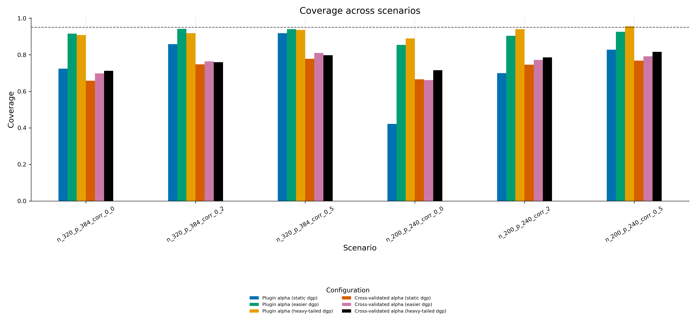
Figure 1: Сoverage probabilities of confidence intervals across simulation scenarios.
The results reveal a clear and robust ranking across designs. Coverage is lowest under the static DGP, substantially higher under the heavy-tailed DGP, and highest under the static–easier design. This ordering holds across most sample sizes, correlation levels, and dimensional configurations, and is particularly pronounced when theoretically motivated plug-in penalties are used.
The poor performance under the static DGP reflects the deliberately demanding structure of this design. In the static specification, the same covariates generate strong confounding in both the treatment and outcome equations, and relevant effects are tightly concentrated. As a result, variable selection becomes fragile in finite samples: small errors in selecting nuisance covariates translate into substantial bias in the post-selection estimator, leading to severe under-coverage. This effect is especially visible in low-correlation and smaller-sample scenarios, where coverage can fall far below nominal levels even when plug-in penalties are employed.
By contrast, the heavy-tailed DGP consistently achieves higher coverage than the static design. This finding may appear counterintuitive at first, given that heavy-tailed covariates and disturbances violate the sub-Gaussian assumptions commonly used in the theoretical analysis of \(\ell_1\)-regularized methods. However, inspection of the DGP structure clarifies the mechanism. In the heavy-tailed design, confounding remains present but is less tightly aligned across equations, and the effective sparsity structure is easier to recover despite the presence of extreme observations. Moreover, heavy-tailed noise increases variability in the first-stage estimators, which in turn leads to more conservative confidence intervals after orthogonalization. The resulting increase in interval length partially offsets finite-sample bias, yielding improved empirical coverage relative to the static design. Importantly, this improvement reflects reduced confounding severity rather than superior estimation accuracy.
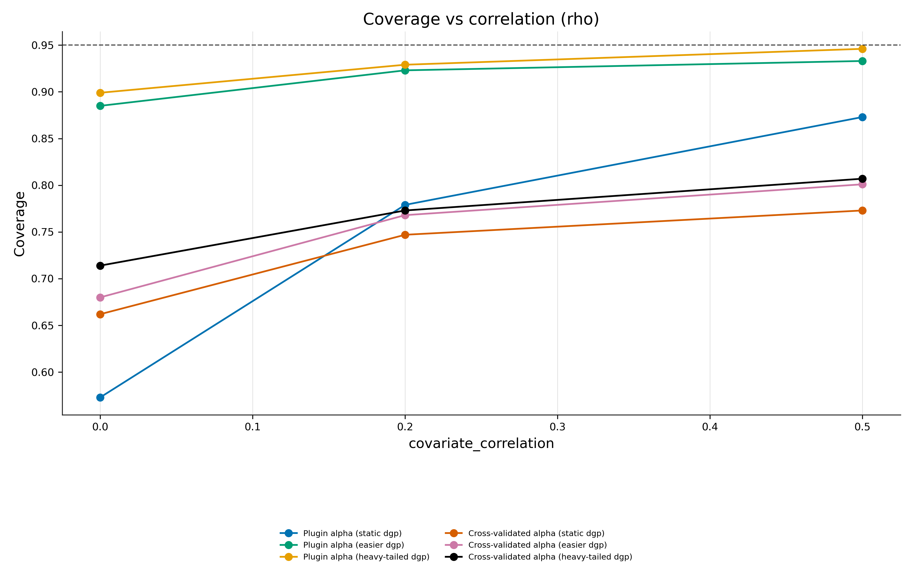
Figure 2: Coverage of Double LASSO confidence intervals versus covariate correlation \(\rho\).
The static–easier DGP delivers the most favorable performance overall. In this design, confounding is weaker and the relevant covariates enter more cleanly, making approximate sparsity easier to exploit. As a consequence, Double LASSO with plug-in penalties achieves coverage rates close to the nominal level across nearly all scenarios. This behavior closely matches the conditions under which asymptotic validity is established and serves as a benchmark illustrating the method’s intended operating environment. Even when cross-validated penalties are used, coverage remains substantially better than in the static design, underscoring the benefits of approximate sparsity for reliable inference.
Penalty choice plays a central role across all designs. Cross-validated penalties systematically underperform relative to plug-in penalties, particularly under the static DGP. Cross-validation tends to select smaller penalties, leading to more aggressive variable selection and insufficient bias control in the post-selection regression. Even in the heavy-tailed and static–easier designs, cross-validated Double LASSO exhibits persistent under-coverage, underscoring the importance of conservative tuning for reliable inference.
Taken together, the coverage results indicate that the primary driver of under-coverage in finite samples is confounding structure rather than tail behavior. Although heavy-tailed distributions complicate estimation, they do not represent the most hostile environment for Double LASSO in this study. Instead, designs with strong, tightly aligned confounding—such as the static DGP — pose the greatest challenge for valid inference. These findings complement existing asymptotic theory by highlighting how design features beyond distributional tails shape the finite-sample reliability of Double LASSO confidence intervals (Chernozhukov, Chetverikov, & Kato, 2017).
4.2 Confidence Interval Length
In addition to coverage probabilities, we examine the average length of confidence intervals as a measure of inferential precision. We know that coverage assesses whether intervals contain the true parameter, whereas interval length captures how informative those intervals are in finite samples. Figure 3 reports average confidence-interval lengths across scenarios, data-generating processes, and penalty choices.
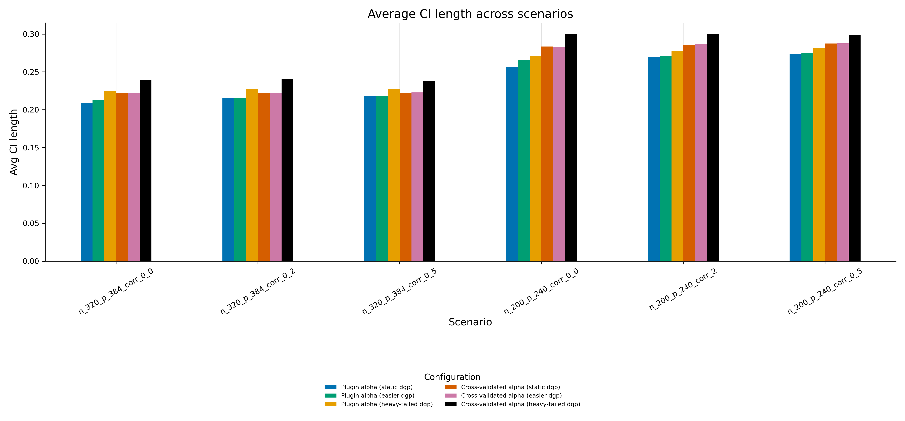
Figure 3: Average confidence-interval length of Double LASSO across simulation scenarios.
Several patterns emerge clearly. First, confidence intervals are systematically shorter under plug-in penalties than under cross-validated penalties across all designs. This mirrors the coverage results: cross-validation selects smaller penalties, which tend to amplify estimation noise in the orthogonalized score and translate into wider confidence intervals. Plug-in penalties, by contrast, yield more stable first-stage fits and tighter inference, particularly in designs that align well with approximate sparsity. This difference is most pronounced in the heavy-tailed and static designs, where cross-validated intervals are uniformly the widest.
Second, interval length varies meaningfully across data generating processes. The static–easier DGP consistently produces the shortest confidence intervals, reflecting the relative ease of variable selection and weaker confounding in this design. The static DGP yields moderately longer intervals, while the heavy-tailed DGP produces the widest intervals overall, especially when cross-validated penalties are used. This ordering is intuitive: heavy-tailed covariates and disturbances increase variability in both the selection and estimation stages, leading to more conservative inference even when coverage improves.
The dependence of interval length on sample size and dimensionality further reinforces these conclusions. As shown in Figures A.3 and A.4, confidence intervals shrink monotonically as the sample size increases, consistent with asymptotic theory. Similarly, holding the sample size fixed, intervals become shorter as the effective dimensional complexity of the design decreases. These patterns hold uniformly across DGPs and penalty choices, indicating that the main determinants of interval length are sample size and estimator variability rather than scenario-specific features of individual scenarios.
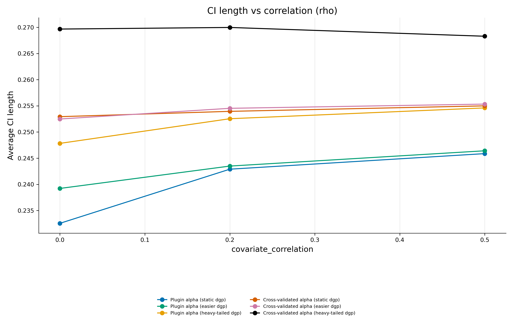
Figure 4: Average confidence-interval length as a function of covariate correlation \(\rho\).
Finally, Figure 4 illustrates the relationship between interval length and covariate correlation. For plug-in penalties, interval length increases slightly with correlation, reflecting the interaction between multicollinearity and regularization strength. For cross-validated penalties, intervals are both wider and less sensitive to correlation, suggesting that aggressive tuning dominates the effect of the design matrix. Importantly, the ranking across DGPs remains stable: heavy-tailed designs produce the longest intervals, followed by the static DGP, with the static–easier design remaining the most efficient.
Overall, the confidence interval length results help explain the observed coverage patterns. Higher coverage, particularly under the heavy-tailed DGP, is primarily achieved through wider, more conservative intervals. By contrast, the static–easier design combines near-nominal coverage with shorter intervals, suggesting that confounding structure and approximate sparsity, rather than tail behavior, are the main determinants of inferential efficiency. These patterns align with standard bias–variance trade-offs in high-dimensional regularized estimation.
4.3 Design Complexity: Covariate Correlation and Heavy Tails
We now examine how two central dimensions of design complexity covariate correlation and tail behavior—jointly shape the finite sample performance of Double LASSO inference. Although often discussed separately in the literature, these features affect Double LASSO through closely related channels, namely the stability of variable selection and the variability of the orthogonalized score. Considering them together provides a clearer picture of when confidence intervals remain reliable and when they become conservative or distorted.
In the heavy-tailed designs, the higher empirical coverage is largely driven by longer confidence intervals, rather than by a systematic improvement in point-estimator accuracy.
Increasing covariate correlation systematically improves coverage across all data generating processes. As correlation rises, the effective dimensional complexity of the design is reduced, making it easier for \(\ell_1\)-regularized first stage regressions to recover relevant controls. This effect is particularly visible under plug-in penalties, where coverage moves steadily toward the nominal level as correlation increases. The improvement holds for static, static–easier, and heavy-tailed designs alike, indicating that correlation primarily mitigates selection error rather than interacting strongly with distributional assumptions. In this sense, correlation acts as a stabilizing force in high-dimensional inference, counteracting the instability induced by strong confounding or limited sample size. We emphasize, however, that the effect of correlation on high-dimensional inference is highly design-dependent, and correlation need not be beneficial in general, as it may violate compatibility or restricted eigenvalue conditions in other settings.
Heavy-tailed designs, by contrast, introduce an additional aspect of complexity by weakening concentration properties and increasing estimator variability. In the present simulations, however, heavy-tailed covariates and disturbances do not represent the most adverse environment for Double LASSO. Instead, their impact operates mainly through increased dispersion in first-stage estimates, which leads to wider and more conservative confidence intervals. This mechanism explains why coverage under heavy-tailed designs often exceeds that of the static DGP despite the violation of sub-Gaussian assumptions. An increase in coverage reflects interval conservatism rather than improved precision, a point reinforced by the corresponding confidence-interval length results.
4.3.1 Coverage–length pairing (heavy-tailed vs Gaussian designs)
To clarify the mechanism behind the higher coverage in heavy-tailed environments, we present coverage jointly with the mean confidence-interval length for a representative high-dimensional scenario (\(n=320\), \(p=384\), \(\rho=0.5\)).
| Design | Penalty | Coverage (95%) | Mean CI length |
|---|---|---|---|
| Gaussian (static) | Plug-in | 0.918 | 0.218 |
| Gaussian (static) | CV | 0.778 | 0.223 |
| Heavy-tailed | Plug-in | 0.936 | 0.228 |
| Heavy-tailed | CV | 0.798 | 0.238 |
The table shows that the higher coverage under heavy tails is accompanied by systematically longer confidence intervals, indicating more conservative inference rather than improved point-estimator accuracy.
The interaction between correlation and heavy tails further clarifies this pattern. As correlation increases, the stabilizing effect of reduced effective dimensionality benefits heavy-tailed designs in much the same way as Gaussian designs. Coverage improves while interval length remains comparatively large, preserving conservative inference. By contrast, the static DGP remains vulnerable at low correlation levels, where strongly aligned confounding dominates both tail behavior and penalty choice. These findings suggest that, in finite samples, the structure of confounding plays a more decisive role than tail behavior in determining the reliability of Double LASSO confidence intervals.
Overall,the complexity in high-dimensional designs arises not only from non-Gaussianity, but from the interaction between confounding structure, correlation, and regularization. Heavy-tailed data primarily affect the variance side of the bias–variance tradeoff, whereas strong confounding undermines bias control through unstable selection. Double LASSO remains robust when at least one stabilizing force such as moderate correlation or conservative penalty choice is present, a conclusion consistent with theoretical insights on orthogonalized inference in high dimensions.
4.4 Comparison with Ordinary Least Squares
Although our primary focus is on inference after variable selection, it is informative to benchmark the performance of Double LASSO against ordinary least squares (OLS), which remains the default estimator in many empirical applications. This comparison is particularly revealing in high-dimensional settings where the number of covariates is comparable to, or exceeds, the sample size.
Across nearly all scenarios considered, Double LASSO delivers substantially more stable inference than OLS. In terms of coverage, OLS often exhibits either severe over coverage or pronounced under coverage, depending on the design. In near \(p=n\) and fully high-dimensional regimes, OLS confidence intervals become extremely wide, mechanically increasing the coverage but offering little inferential value. By contrast, Double LASSO maintains coverage closer to the nominal level while producing intervals of economically meaningful length. This pattern is especially evident in designs with moderate to high correlation and in scenarios with many nuisance covariates, where OLS struggles to distinguish signal from noise.
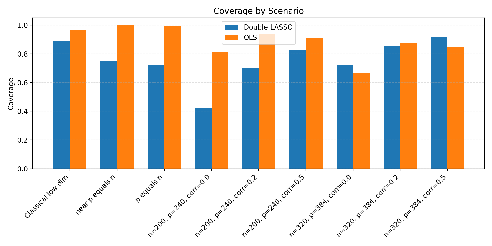
Figure 5: Coverage probabilities of Double LASSO and OLS across simulation scenarios.
The comparison is even sharper when considering precision. OLS confidence intervals expand dramatically as dimensionality increases, reflecting both multicollinearity and the instability of variance estimation in over-parameterized models. Double LASSO avoids this explosion by partialling out high-dimensional nuisance components before estimation, resulting in markedly shorter intervals across all scenarios. The distributional plots of the treatment effect estimator further reinforce this point: Double LASSO estimates are closely concentrated around the true parameter, whereas OLS estimates display substantial dispersion and, in some designs, noticeable bias.
Finally, error-based metrics such as RMSE and bias consistently favor Double LASSO in high-dimensional designs. While OLS performs well in classical low-dimensional settings, its performance declines rapidly once the dimensionality approaches the sample size. Double LASSO, in contrast, remains robust across a wide range of designs, confirming its suitability for modern econometric applications with many potential controls.
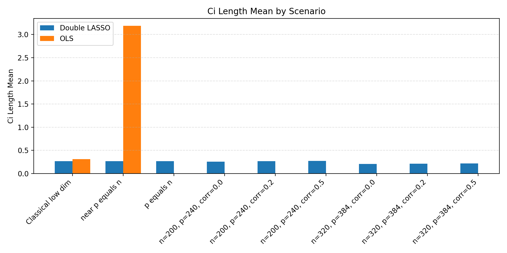
Figure 6: Average confidence-interval length of Double LASSO and OLS across simulation scenarios.
Overall, the results suggest that OLS provides a useful benchmark but fails to deliver reliable inference in high-dimensional settings. The advantages of Double LASSO arise not from improvements in point estimation alone, but from its ability to deliver valid and interpretable inference under approximate sparsity.
5 Discussion and Conclusion
This paper examines the finite sample confidence-interval performance of the Double LASSO estimator in high-dimensional linear models, with particular attention to coverage accuracy and interval length under realistic design complexity. The simulation results provide a coherent assessment of the finite-sample behavior of Double LASSO under forms of complexity that are common in modern econometric applications. Across a wide range of designs, the method delivers confidence intervals with markedly improved coverage relative to naive alternatives, while maintaining reasonable inferential precision even when the dimensionality of the control set is large. These results are consistent with the theoretical properties established in the Double LASSO literature, which emphasize uniform inferential validity under approximate sparsity rather than optimal performance in a single, idealized design.
One striking pattern that emerges is the sensitivity of coverage to the structure of the data generating process. In the static Gaussian design, particularly when covariates are weakly correlated, Double LASSO tends to under-cover in finite samples. This behavior can be traced back to imperfect variable selection in settings where relevant controls have small coefficients and are difficult to distinguish from noise. In contrast, both the static–easier and heavy-tailed designs yield markedly improved coverage. In these settings, either stronger signal strength or increased variability in covariates and errors appears to facilitate the selection of relevant controls, thereby improving the quality of the orthogonalized estimating equation. This observation highlights an important practical point: worse-behaved data in a distributional sense do not necessarily imply worse inferential performance when the estimation strategy is designed to exploit sparsity and orthogonality.
The role of covariate correlation further refines this picture. Moderate correlation among controls consistently improves coverage, a result that may appear counterintuitive at first glance. In high-dimensional sparse models, correlation can effectively reduce the dimensionality of the problem by clustering information across covariates, making it easier for LASSO-based procedures to identify the relevant subspace. Our findings are consistent with earlier simulation evidence showing that inference procedures based on orthogonal scores can benefit from correlated designs, provided that the sparsity structure is preserved. At the same time, higher correlation slightly increases confidence interval length, reflecting a natural bias–variance tradeoff rather than a failure of the method.
Penalty choice also plays a central role in finite sample performance. Across almost all scenarios, plug-in penalties dominate cross-validated penalties in terms of coverage, albeit at the cost of slightly longer confidence intervals in some designs. This pattern is consistent with the well known tendency of cross-validation to choose penalties smaller than theoretically motivated penalty levels when the objective is prediction rather than inference. In the context of Double LASSO, this insufficient regularization can translate into omitted variables in the selection step, undermining the orthogonality that underpins valid inference. Our results therefore reinforce the practical recommendation to favor theoretically calibrated penalties when the primary goal is inference rather than prediction.
The comparison with OLS further clarifies the scope of these conclusions. While OLS performs well in classical low-dimensional settings, its behavior declines rapidly as the number of covariates approaches the sample size. In such regimes, OLS confidence intervals either explode in length or become unreliable due to unstable variance estimation. Double LASSO avoids these failures by explicitly accounting for high-dimensional nuisance components, thereby delivering inference that remains interpretable even when traditional methods break down. Importantly, the gains from Double LASSO are not superficial; they reflect a fundamental shift from conditioning on a fixed, potentially misspecified model to constructing inference that is robust to selection mistakes.
At the same time, important limitations remain. Double LASSO relies on approximate sparsity and on the absence of severe model misspecification. In finite samples, weak signals and low correlation among covariates can still lead to under coverage, and the method does not explicitly account for uncertainty about the selected model.
These limitations point naturally to several directions for future research. One promising area of research is the integration of Double LASSO with sparsified simultaneous confidence interval methods, which aim to incorporate model uncertainty directly into inferential statements. Another is the extension to settings with unobserved confounding, where doubly debiased or spectrally adjusted procedures have shown encouraging theoretical properties. Finally, adapting high-dimensional inferential methods to time-series and panel data remains an open and practically important challenge, particularly for applications in macroeconomics and finance. Also, valid inference in high-dimensional environments requires methods that are explicitly designed for that purpose. Double LASSO represents a significant step in this direction, and continued methodological development will be essential as empirical datasets grow ever richer and more complex.
Overall, the results highlight both the capabilities and the limitations of Double LASSO in finite samples. While the method is well suited to high-dimensional settings characterized by approximate sparsity, it is not uniformly reliable across all designs: under-coverage may occur when signals are weak and covariate correlation is low, and performance remains sensitive to the choice of penalty parameters. At the same time, in environments that broadly conform to the conditions under which Double LASSO is theoretically justified, the procedure achieves a favorable balance between robustness and inferential precision. From an applied perspective, these findings emphasize the importance of careful design considerations—particularly signal strength, correlation structure, and penalty calibration — when using Double LASSO for inference in high-dimensional linear models.
6 References
Belloni, A., Chernozhukov, V., & Hansen, C. (2014). Inference on treatment effects after selection among high-dimensional controls. The Review of Economic Studies, 81(2), 608–650.
Chernozhukov, V., Chetverikov, D., & Kato, K. (2017). Central limit theorems and bootstrap in high dimensions. The Annals of Probability, 45(4), 2309–2352.
Chernozhukov, V., Hansen, C., & Spindler, M. (2018). Valid post-selection and post-regularization inference: An elementary, general approach. The Econometrics Journal, 21(1), C1–C33.
Leeb, H., & Pötscher, B. M. (2005). Model selection and inference: Facts and fiction. Econometric Theory, 21(1), 21–59.
Neyman, J. (1959). Optimal asymptotic tests of composite hypotheses. In Proceedings of the Berkeley Symposium on Mathematical Statistics and Probability (Vol. 3, pp. 213–234). University of California Press.
White, H. (1980). A heteroskedasticity-consistent covariance matrix estimator and a direct test for heteroskedasticity. Econometrica, 48(4), 817–838.
Davidson, R., & MacKinnon, J. G. (2004). Econometric theory and methods. Oxford University Press.
Gentzkow, M., & Shapiro, J. M. (2014). Code and data for the social sciences: A practitioner’s guide. University of Chicago Working Paper.
Pedregosa, F., et al. (2011). Scikit-learn: Machine learning in Python. Journal of Machine Learning Research, 12, 2825–2830.
Virtanen, P., et al. (2020). SciPy 1.0: Fundamental algorithms for scientific computing in Python. Nature Methods, 17(3), 261–272.
Guo, Z., Ćevid, D., & Bühlmann, P. (2020). Doubly debiased LASSO: High-dimensional inference under hidden confounding. The Annals of Statistics, 48(6), 3560–3584.
Ouyang, J., Tan, K. M., & Xu, G. (2023). High-dimensional inference for generalized linear models with hidden confounding. Journal of the American Statistical Association.
Zhu, X., Qin, Y., & Wang, P. (2023). Sparsified simultaneous confidence intervals for high-dimensional linear models. Journal of Econometrics.
Zhu, Y., Yu, Z., & Cheng, G. (2019). High-dimensional inference in partially linear models. The Annals of Statistics, 47(6), 3322–3354.
7 Appendix
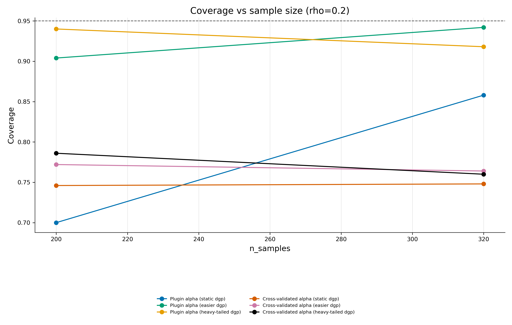
Figure A.1: Coverage as a Function of Sample Size (\(\rho = 0.2\))
Coverage improves as the sample size increases, particularly under plug-in penalties. Plug-in penalties move closer to the nominal level, while cross-validation remains below it in most cases. The figure shows that small samples make inference more fragile, especially in the static design.
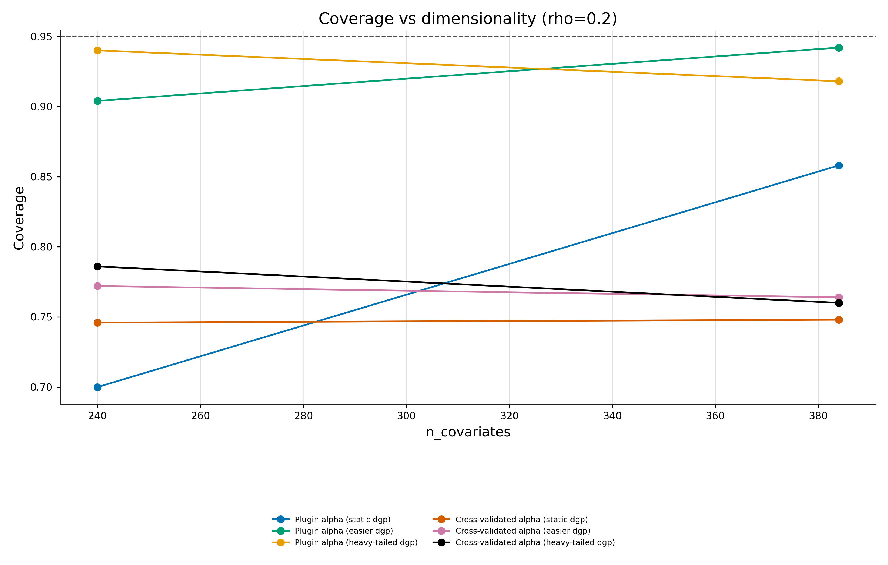
Figure A.2: Coverage as a Function of Dimensionality (\(\rho = 0.2\))
Coverage changes as the number of covariates increases. Plug-in penalties tend to perform better, staying closer to the nominal level, while cross-validation under-covers across dimensions. This highlights how tuning choices affect inference when the model becomes more complex.
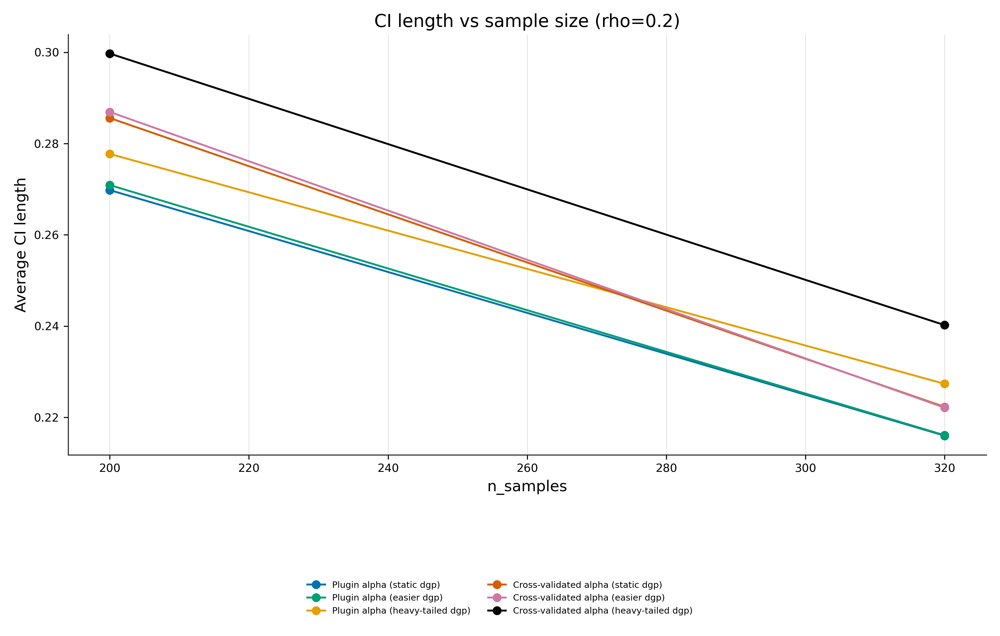
Figure A.3: Confidence Interval Length vs Sample Size
Confidence intervals become shorter as the sample size grows. Cross-validated penalties produce longer intervals than plug-in penalties. Larger samples lead to more stable estimates and therefore narrower intervals.
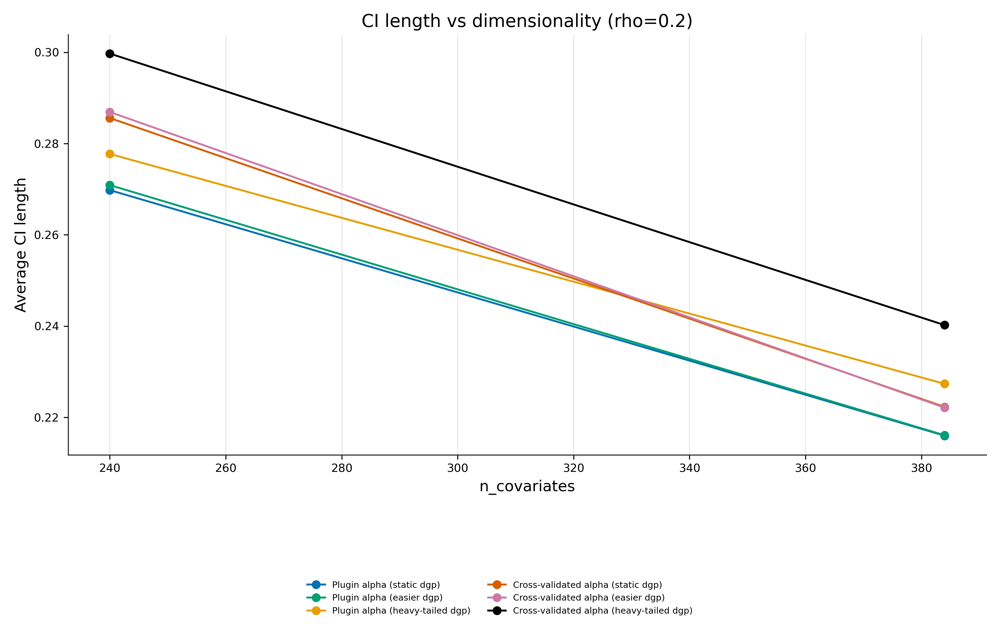
Figure A.4: Average Confidence Interval Length as a Function of Dimensionality (\(\rho = 0.2\))
Confidence interval length declines as dimensional complexity decreases, holding correlation fixed. Plug-in penalties generally produce shorter intervals than cross-validated penalties. The reduction in length is more pronounced under approximate sparsity, indicating improved precision as effective dimensionality falls.
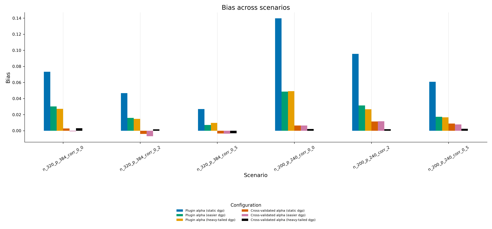
Figure A.5: Bias Across Simulation Scenarios
Bias varies across scenarios and is highest under the static design with low correlation. Double LASSO exhibits substantially smaller bias than OLS in high-dimensional regimes. The results indicate that selection-induced bias remains a central driver of under-coverage in challenging designs.
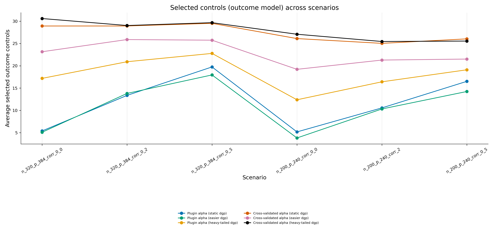
Figure A.6: Number of Selected Controls in the Outcome Model Across Scenarios
The number of selected controls in the outcome equation increases with dimensionality and correlation. Cross-validation tends to select larger models than plug-in penalties. This pattern reflects weaker regularization under prediction-oriented tuning.
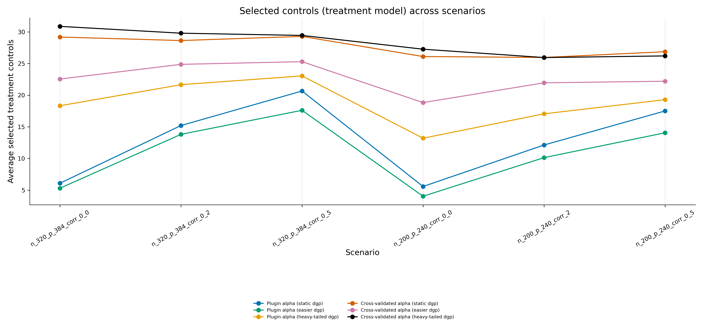
Figure A.7: Number of Selected Controls in the Treatment Model Across Scenarios
The number of selected controls varies across designs and penalty choices. Cross-validation typically selects more variables than plug-in penalties. This suggests that prediction-oriented tuning tends to keep larger models.
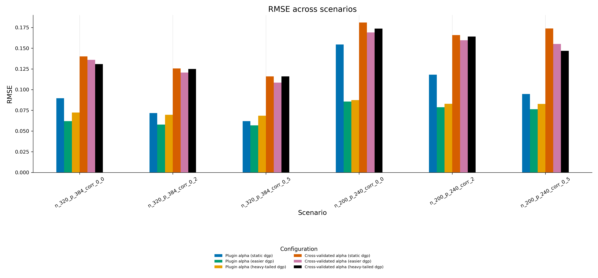
Figure A.8: RMSE Across Simulation Scenarios
RMSE differs noticeably across designs. Double LASSO generally has lower RMSE than OLS in high-dimensional settings, while the difference is small in low-dimensional cases. Overall, the results confirm that OLS becomes unstable as dimensionality increases.
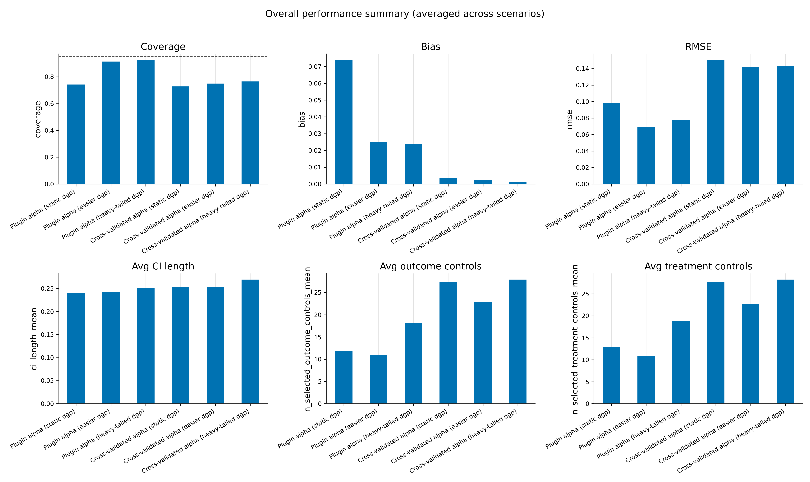
Figure A.9: Summary of Average Performance Measures Across Scenarios
This figure summarizes coverage, bias, RMSE, interval length, and model size. Plug-in Double LASSO achieves coverage close to nominal levels with moderate interval length and relatively small bias. Cross-validation tends to select larger models and produce longer intervals without clear gains in accuracy.
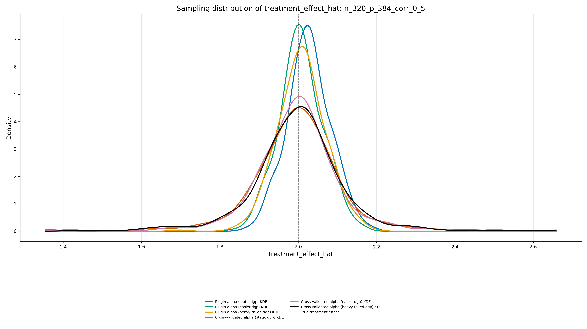
Figure A.10: Sampling Distribution of the Treatment Effect Estimator (\(n = 320\), \(p = 384\), \(\rho = 0.5\))
The distribution of Double LASSO estimates is centered close to the true value and relatively concentrated. OLS shows greater spread and visible bias. The difference in shape helps explain why Double LASSO delivers more reliable inference in high-dimensional settings.
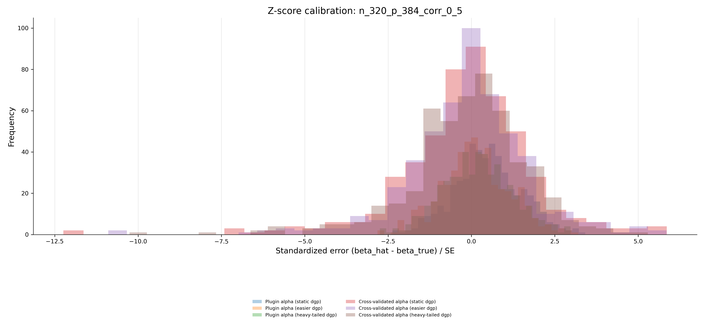
Figure A.11: Distribution of the Z-Score for the Treatment Effect Estimator (\(n = 320\), \(p = 384\), \(\rho = 0.5\))
The standardized errors are more tightly centered around zero under plug-in penalties. Cross-validation produces heavier tails, reflecting more variability. Deviations from symmetry are stronger under heavy-tailed designs, which affects coverage performance.
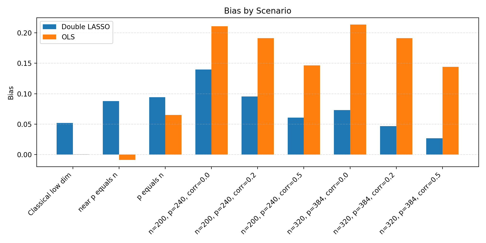
Figure A.12: Bias Comparison Between Double LASSO and OLS Across Scenarios
Bias is substantially larger for OLS in high-dimensional scenarios. Double LASSO remains more stable across designs. The gap is especially clear when the number of covariates approaches the sample size.
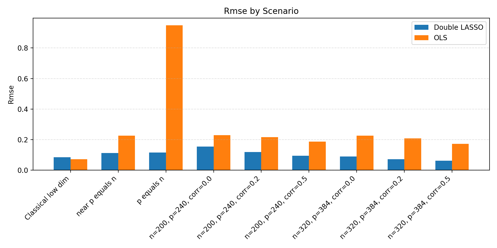
Figure A.13: RMSE Comparison Between Double LASSO and OLS Across Scenarios
OLS shows a sharp increase in RMSE as dimensionality rises. Double LASSO maintains lower and more stable error across most scenarios. In low-dimensional settings, the difference between the two methods becomes small.
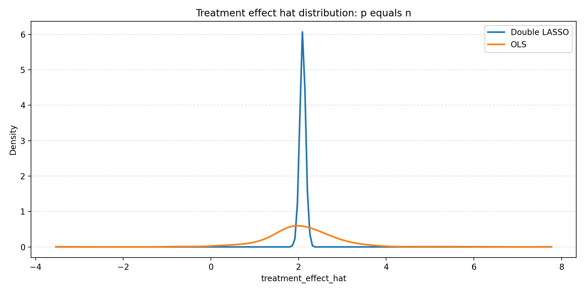
Figure A.14: Sampling Distribution of the Treatment Effect Estimator in the \(p = n\) Design
When the number of covariates equals the sample size, OLS becomes highly unstable. Double LASSO remains centered near the true value and shows less dispersion. This illustrates how classical methods break down at the boundary of feasibility.
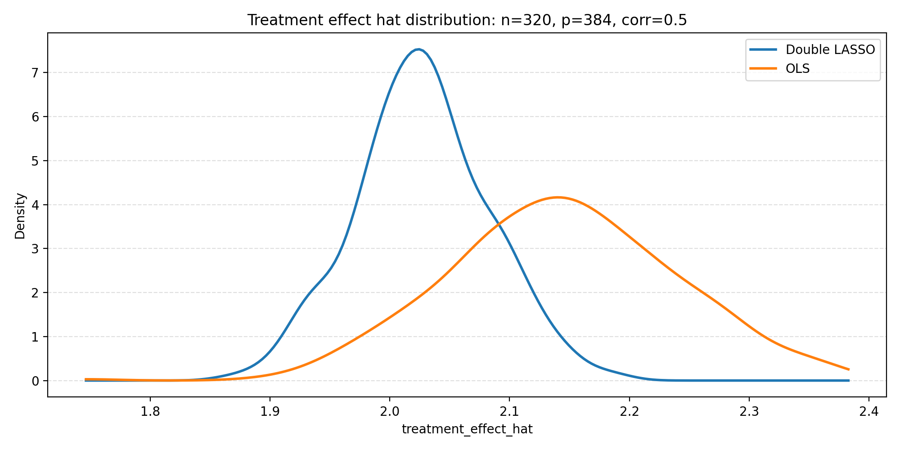
Figure A.15: Sampling Distribution of the Treatment Effect Estimator (\(n = 320\), \(p = 384\), \(\rho = 0.5\))
In this high-dimensional correlated design, Double LASSO estimates are tightly concentrated around the true effect. OLS displays both greater spread and noticeable bias. The difference explains the better coverage and RMSE performance of Double LASSO in this setting.
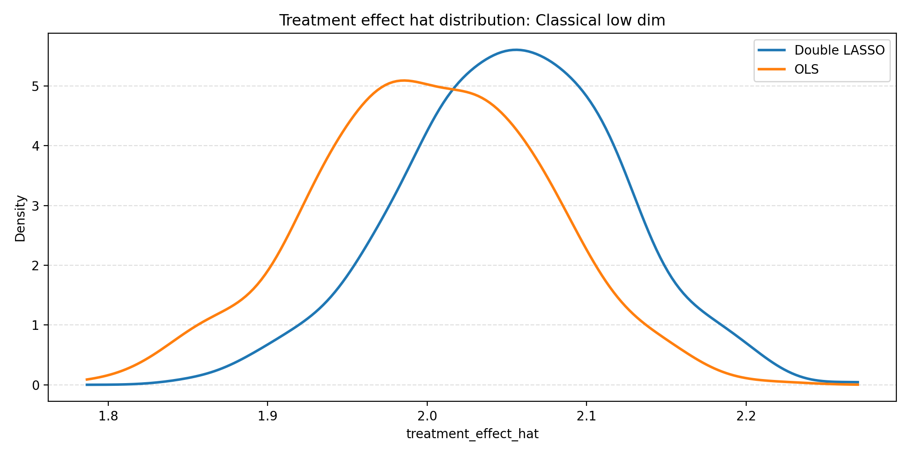
Figure A.16: Sampling Distribution of the Treatment Effect Estimator in the Classical Low-Dimensional Design
In the low-dimensional benchmark, both methods perform similarly. The distributions are centered and show comparable dispersion. This confirms that differences between the methods arise mainly in high-dimensional environments.